전기기사 (2022-03-05 기출문제)
1과목: 전기자기학
1. 면적이 0.02m2, 간격이 0.03m이고, 공기로 채워진 평행평판의 커패시터에 1.0×10-6C의 전하를 충전시킬 때, 두 판 사이에 작용하는 힘의 크기는 약 몇 N 인가?
- 1.13
- 1.41
- 1.89
- 2.83
(정답률: 39%)

2. 자극의 세기가 7.4×10-5Wb, 길이가 10cm인 막대자석이 100AT/m의 평등자계 내에 자계의 방향과 30°로 놓여 있을 때 이 자석에 작용하는 회전력(N·m)은?
- 2.5×10-3
- 3.7×10-4
- 5.3×10-5
- 6.2×10-6
(정답률: 63%)
3. 유전율이 ε = 2ε0이고 투자율이 μ0인 비도전성 유전체에서 전자파의 전계의 세기가
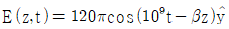
V/m 일 때, 자계의 세기 H(A/m)는? (단,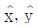
는 단위벡터이다.)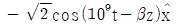
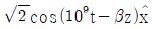
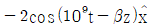
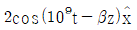
(정답률: 41%)
4. 자기회로에서 전기회로의 도전율 σ(℧/m)에 대응되는 것은?
- 자속
- 기자력
- 투자율
- 자기저항
(정답률: 75%)
5. 단면적이 균일한 환상철심에 권수 1000회인 A코일과 권수 NB회인 B 코일이 감겨져 있다. A코일의 자기 인덕턴스가 100mH이고, 두 코일 사이의 상호 인덕턴스가 20mH이고, 결합계수가 1일 때, B코일의 권수(NB)는 몇 회인가?
- 100
- 200
- 300
- 400
(정답률: 61%)
6. 공기 중에서 1V/m의 전계의 세기에 의한 변위전류밀도의 크기를 2A/m2으로 흐르게 하려면 전계의 주파수는 몇 MHz 가 되어야 하는가?
- 9000
- 18000
- 36000
- 72000
(정답률: 47%)
7. 내부 원통 도체의 반지름이 a(m), 외부 원통 도체의 반지름이 b(m)인 동축 원통 도체에서 내외 도체 간 물질의 도전율이 σ(℧/m)일 때 내외 도체 간의 단위 길이당 컨덕턴스(℧/m)는?
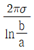
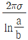
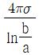
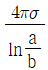
(정답률: 63%)
8. z축 상에 놓인 길이가 긴 직선 도체에 10A의 전류가 +z 방향으로 흐르고 있다. 이 도체의 주위의 자속밀도가
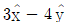
Wb/m2 일 때 도체가 받는 단위 길이당 힘(N/m)은? (단,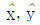
는 단위벡터이다.)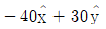
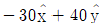
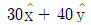
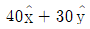
(정답률: 39%)
9. 진공 중 한 변의 길이가 0.1m인 정삼각형의 3정점 A, B, C에 각각 2.0×10-6C의 점전하가 있을 때, 점 A의 전하에 작용하는 힘은 몇 N 인가?
- 1.8√2
- 1.8√3
- 3.6√2
- 3.6√3
(정답률: 35%)
10. 투자율이 μ(H/m), 자계의 세기가 H(AT/m), 자속밀도가 B(Wb/m2)인 곳에서의 자계 에너지 밀도(J/m3)는?
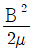
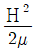
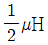
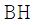
(정답률: 66%)
11. 진공 내 전위함수가 V = x2 + y2(V)로 주어졌을 때, 0≤x≤1, 0≤y≤1, 0≤z≤1인 공간에 저장되는 정전에너지(J)는?
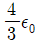
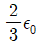
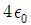
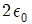
(정답률: 45%)
12. 전계가 유리에서 공기로 입사할 때 입사각 θ1과 굴절각 θ2의 관계와 유리에서의 전계 E1과 공기에서의 전계 E2의 관계는?
- θ1 ＞ θ2, E1 ＞ E2
- θ1 ＜ θ2, E1 ＞ E2
- θ1 ＞ θ2, E1 ＜ E2
- θ1 ＜ θ2, E1 ＜ E2
(정답률: 48%)
13. 진공 중에 4m 간격으로 평행한 두 개의 무한 평판 도체에 각각 +4 C/m2, -4 C/m2의 전하를 주었을 때, 두 도체 간의 전위차는 약 몇 V 인가?
- 1.36×1011
- 1.36×1012
- 1.8×1011
- 1.8×1012
(정답률: 33%)
14. 인덕턴스(H)의 단위를 나타낸 것으로 틀린 것은?
- Ω•s
- Wb/A
- J/A2
- N/(A•m)
(정답률: 50%)
15. 진공 중 반지름이 a(m)인 무한길이의 원통 도체 2개가 간격 d(m)로 평행하게 배치되어 있다. 두 도체 사이의 정전용량(C)을 나타낸 것으로 옳은 것은?
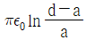
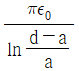
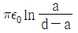
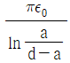
(정답률: 58%)
16. 진공 중에 4m의 간격으로 놓여진 평행 도선에 같은 크기의 왕복 전류가 흐를 때 단위 길이당 2.0×10-7N의 힘이 작용하였다. 이때 평행 도선에 흐르는 전류는 몇 A 인가?
- 1
- 2
- 4
- 8
(정답률: 47%)
17. 평행 극판 사이의 간격이 d(m)이고 정전용량이 0.3μF인 공기 커패시터가 있다. 그림과 같이 두 극판 사이에 비유전율이 5인 유전체를 절반 두께 만큼 넣었을 때 이 커패시터의 정전용량은 몇 μF 이 되는가?
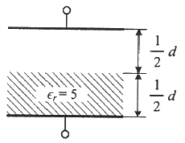
- 0.01
- 0.⑤
- 0.1
- 0.5
(정답률: 58%)
18. 반지름이 a(m)인 접지된 구도체와 구도체의 중심에서 거리 d(m) 떨어진 곳에 점전하게 존재할 때, 점전하에 의한 접지된 구도체에서의 영상전하에 대한 설명으로 틀린 것은?
- 영상전하는 구도체 내부에 존재한다.
- 영상전하는 점전하와 구도체 중심을 이은 직선상에 존재한다.
- 영상전하의 전하량과 점전하의 전하량은 크기는 같고 부호는 반대이다.
- 영상전하의 위치는 구도체의 중심과 점전하 사이 거리(d(m))와 구도체의 반지름(a(m))에 의해 결정된다.
(정답률: 42%)
19. 평등 전계 중에 유전체 구에 의한 전계 분포가 그림과 같이 되었을 때 ε1과 ε2의 크기 관계는?(문제 오류로 가답안 발표시 2번으로 발표되었지만 확정답안 발표시 모두 정답처리 되었습니다. 여기서는 가답안인 2번을 누르면 정답 처리 됩니다.)
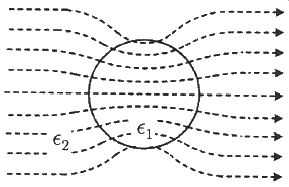
- ε1 ＞ ε2
- ε1 ＜ ε2
- ε1 = ε2
- 무관하다.
(정답률: 61%)
20. 어떤 도체에 교류 전류가 흐를 때 도체에서 나타나는 표피 효과에 대한 설명으로 틀린 것은?
- 도체 중심부보다 도체 표면부에 더 많은 전류가 흐르는 것을 표피 효과라 한다.
- 전류의 주파수가 높을수록 표피 효과는 작아진다.
- 도체의 도전율이 클수록 표피 효과는 커진다.
- 도체의 투자율이 클수록 표피 효과는 커진다.
(정답률: 68%)
2과목: 전력공학
21. 소호리액터를 송전계통에 사용하면 리액터의 인덕턴스와 선로의 정전용량이 어떤 상태로 되어 지락전류를 소멸시키는가?
- 병렬공진
- 직렬공진
- 고임피던스
- 저임피던스
(정답률: 57%)
22. 어느 발전소에서 40000kWh를 발전하는데 발열량 5000㎉/㎏의 석탄을 20톤 사용하였다. 이 화력발전소의 열효율(%)은 약 얼마인가?
- 27.5
- 30.4
- 34.4
- 38.5
(정답률: 56%)
23. 송전전력, 선간전압, 부하역률, 전력손실 및 송전거리를 동일하게 하였을 경우 단상 2선식에 대한 3상 3선식의 총 전선량(중량)비는 얼마인가? (단, 전선은 동일한 전선이다.)
- 0.75
- 0.94
- 1.15
- 1.33
(정답률: 41%)
24. 3상 송전선로가 선간단락(2선 단락)이 되었을 때 나타나는 현상으로 옳은 것은?
- 역상전류만 흐른다.
- 정상전류와 역상전류가 흐른다.
- 역상전류와 영상전류가 흐른다.
- 정상전류와 영상전류가 흐른다.
(정답률: 62%)
25. 중거리 송전선로의 4단자 정수가 A = 1.0, B = j190, D = 1.0 일 때 C의 값은 얼마인가?
- 0
- -j120
- j
- j190
(정답률: 60%)
26. 배전전압을 √2배로 하였을 때 같은 손실률로 보낼 수 있는 전력은 몇 배가 되는가?
- √2
- √3
- 2
- 3
(정답률: 56%)
27. 다음 중 재점호가 가장 일어나기 쉬운 차단전류는?
- 동상전류
- 지상전류
- 진상전류
- 단락전류
(정답률: 51%)
28. 현수애자에 대한 설명이 아닌 것은?
- 애자를 연결하는 방법에 따라 클레비스(Clevis)형과 볼 소켓형이 있다.
- 애자를 표시하는 기호는 P이며 구조는 2~5층의 갓 모양의 자기편을 시멘트로 접착하고 그 자기를 주철재 base로 지지한다.
- 애자의 연결개수를 가감함으로써 임의의 송전전압에 사용할 수 있다.
- 큰 하중에 대하여는 2련 또는 3련으로 하여 사용할 수 있다.
(정답률: 56%)
29. 교류발전기의 전압조정 장치로 속응 여자방식을 채택하는 이유로 틀린 것은?
- 전력계통에 고장이 발생할 때 발전기의 동기화력을 증가시킨다.
- 송전계통의 안정도를 높인다.
- 여자기의 전압 상승률을 크게 한다.
- 전압조정용 탭의 수동변환을 원활히 하기 위함이다.
(정답률: 33%)
30. 차단기의 정격차단시간에 대한 설명으로 옳은 것은?
- 고장 발생부터 소호까지의 시간
- 트립코일 여자로부터 소호까지의 시간
- 가동 접촉자의 개극부터 소호까지의 시간
- 가동 접촉자의 동작 시간부터 소호까지의 시간
(정답률: 63%)
31. 3상 1회선 송전선을 정삼각형으로 배치한 3상 선로의 자기인덕턴스를 구하는 식은? (단, D는 전선의 선간거리(m), r은 전선의 반지름(m)이다.)
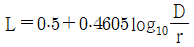
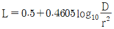
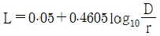
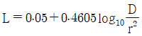
(정답률: 62%)
32. 불평형 부하에서 역률(%)은?
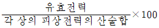
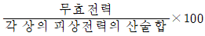
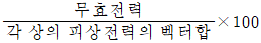
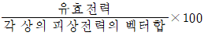
(정답률: 55%)
33. 다음 중 동작속도가 가장 느린 계전 방식은?
- 전류 차동 보호 계전 방식
- 거리 보호 계전 방식
- 전류 위상 비교 보호 계전 방식
- 방향 비교 보호 계전 방식
(정답률: 44%)
34. 부하회로에서 공진 현상으로 발생하는 고조파 장해가 있을 경우 공진 현상을 회피하기 위하여 설치하는 것은?
- 진상용 콘덴서
- 직렬 리액터
- 방전코일
- 진공 차단기
(정답률: 57%)
35. 경간이 200m인 가공 전선로가 있다. 사용전선의 길이는 경간보다 몇 m 더 길게 하면 되는가? (단, 사용전선의 1m 당 무게는 2㎏, 인장하중은 4000㎏, 전선의 안전율은 2로 하고 풍압하중은 무시한다.)
- 1/2
- √2
- 1/3
- √3
(정답률: 50%)
36. 송전단 전압이 100V, 수전단 전압이 90V인 단거리 배전선로의 전압강하율(%)은 약 얼마인가?
- 5
- 11
- 15
- 20
(정답률: 64%)
37. 다음 중 환상(루프) 방식과 비교할 때 방사상 배전선로 구성 방식에 해당되는 사항은?
- 전력 수요 증가 시 간선이나 분기선을 연장하여 쉽게 공급이 가능하다.
- 전압 변동 및 전력손실이 작다.
- 사고 발생 시 다른 간선으로의 전환이 쉽다.
- 환상방식 보다 신뢰도가 높은 방식이다.
(정답률: 40%)
38. 초호각(Arcing horn)의 역할은?
- 풍압을 조절한다.
- 송전 효율을 높인다.
- 선로의 섬락 시 애자의 파손을 방지한다.
- 고주파수의 섬락전압을 높인다.
(정답률: 67%)
39. 유효낙차 90m, 출력 104500㎾, 비속도(특유속도) 210m·㎾인 수차의 회전속도는 약 몇 rpm인가?
- 150
- 180
- 210
- 240
(정답률: 38%)
40. 발전기 또는 주변압기의 내부고장 보호용으로 가장 널리 쓰이는 것은?
- 거리 계전기
- 과전류 계전기
- 비율차동 계전기
- 방향단락 계전기
(정답률: 61%)
3과목: 전기기기
41. SCR을 이용한 단상 전파 위상제어 정류회로에서 전원전압은 실효값이 220V, 60㎐인 정현파이며, 부하는 순 저항으로 10Ω이다. SCR의 점호각 a를 60°라 할 때 출력전류의 평균값(A)은?
- 7.54
- 9.73
- 11.43
- 14.86
(정답률: 32%)
42. 직류발전기가 90% 부하에서 최대효율이 된다면 이 발전기의 전부하에 있어서 고정손과 부하손의 비는?
- 0.81
- 0.9
- 1.0
- 1.1
(정답률: 60%)
43. 정류기의 직류측 평균전압이 2000V이고 리플률이 3%일 경우, 리플전압의 실효값(V)은?
- 20
- 30
- 50
- 60
(정답률: 61%)
44. 단상 직권 정류자전동기에서 보상권선과 저항도선의 작용에 대한 설명으로 틀린 것은?
- 보상권선은 역률을 좋게 한다.
- 보상권선은 변압기의 기전력을 크게 한다.
- 보상권선은 전기자 반작용을 제거해준다.
- 저항도선은 변압기 기전력에 의한 단락 전류를 작게 한다.
(정답률: 49%)
45. 3상 동기발전기에서 그림과 같이 1상의 권선을 서로 똑같은 2조로 나누어 그 1조의 권선전압을 E(V), 각 권선의 전류를 I(A)라 하고 지그재그 Y형(Zigzag Star)으로 결선하는 경우 선간전압(V), 선전류(A) 및 피상전력(VA)은?
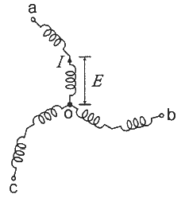
- 3E, I, √3×3E×I=5.2EI
- √3E, 2I, √3×√3E×2I=6EI
- E, 2√3I, √3×E×2√3I=6EI
- √3E, √3I, √3×√3E×√3I=5.2EI
(정답률: 49%)
46. 비돌극형 동기발전기 한 상의 단자전압을 V, 유도기전력을 E, 동기리액턴스를 Xs, 부하각이 δ이고, 전기자저항을 무시할 때 한 상의 최대출력(W)은?
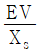
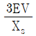
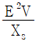
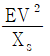
(정답률: 58%)
47. 다음 중 비례추이를 하는 전동기는?
- 동기 전동기
- 정류자 전동기
- 단상 유도전동기
- 권선형 유도전동기
(정답률: 58%)
48. 단자전압 200V, 계자저항 50Ω, 부하전류 50A, 전기자저항 0.15Ω, 전기자 반작용에 의한 전압강하 3V인 직류 분권발전기가 정격속도로 회전하고 있다. 이때 발전기의 유도기전력은 약 몇 V 인가?
- 211.1
- 215.1
- 225.1
- 230.1
(정답률: 42%)
49. 동기기의 권선법 중 기전력의 파형을 좋게 하는 권선법은?
- 전절권, 2층권
- 단절권, 집중권
- 단절권, 분포권
- 전절권, 집중권
(정답률: 60%)
50. 변압기에 임피던스전압을 인가할 때의 입력은?
- 철손
- 와류손
- 정격용량
- 임피던스와트
(정답률: 51%)
51. 불꽃 없는 정류를 하기 위해 평균 리액턴스 전압(A)과 브러시 접촉면 전압강하(B) 사이에 필요한 조건은?
- A＞B
- A＜B
- A=B
- A, B에 관계없다.
(정답률: 38%)
52. 유도전동기 1극의 자속을
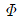
, 2차 유효전류 I2cosθ2, 토크 τ의 관계로 옳은 것은?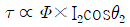
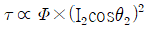
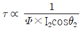
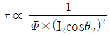
(정답률: 38%)
53. 회전자가 슬립 s로 회전하고 있을 때 고정자와 회전자의 실효 권수비를 α라고 하면 고정자 기전력 E1과 회전자 기전력 E2s의 비는?
- sα
- (1-s)α
- α/s
- α/1-s
(정답률: 37%)
54. 직류 직권전동기의 발생 토크는 전기자 전류를 변화시킬 때 어떻게 변하는가? (단, 자기포화는 무시한다.)
- 전류에 비례한다.
- 전류에 반비례한다.
- 전류의 제곱에 비례한다.
- 전류의 제곱에 반비례한다.
(정답률: 52%)
55. 동기발전기의 병렬운전 중 유도기전력의 위상차로 인하여 발생하는 현상으로 옳은 것은?
- 무효전력이 생긴다.
- 동기화전류가 흐른다.
- 고조파 무효순환전류가 흐른다.
- 출력이 요동하고 권선이 가열된다.
(정답률: 45%)
56. 3상 유도기의 기계적 출력(Po)에 대한 변환식으로 옳은 것은? (단, 2차 입력은 P2, 2차 동손은 P2c, 동기속도는 Ns, 회전자속도는 N, 슬립은 s이다.)
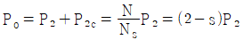
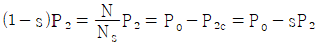
(정답률: 59%)
57. 변압기의 등가회로 구성에 필요한 시험이 아닌 것은?
- 단락시험
- 부하시험
- 무부하시험
- 권선저항 측정
(정답률: 39%)
58. 단권변압기 두 대를 V결선하여 전압을 2000V에서 2200V로 승압한 후 200kVA의 3상 부하에 전력을 공급하려고 한다. 이때 단권변압기 1대의 용량은 약 몇 kVA 인가?
- 4.2
- 10.5
- 18.2
- 21
(정답률: 31%)
59. 권수비 a=6600/220, 주파수 60㎐, 변압기의 철심 단면적 0.02m2, 최대자속밀도 1.2㏝/m2일 때 변압기의 1차측 유도기전력은 약 몇 V인가?
- 1407
- 3521
- 42198
- 49814
(정답률: 48%)
60. 회전형전동기와 선형전동기(Linear Motor)를 비교한 설명으로 틀린 것은?
- 선형의 경우 회전형에 비해 공극의 크기가 작다.
- 선형의 경우 직접적으로 직선운동을 얻을 수 있다.
- 선형의 경우 회전형에 비해 부하관성의 영향이 크다.
- 선형의 경우 전원의 상 순서를 바꾸어 이동 방향을 변경한다.
(정답률: 38%)
4과목: 회로이론 및 제어공학
61. 의 역 z 변환은?
- 1 – e-at
- 1 + e-at
- t • e-at
- t • eat
(정답률: 46%)
62. 다음의 특성 방정식 중 안정한 제어시스템은?
- s3+3s2+4s+5=0
- s4+3s3-s2+s+10=0
- s5+s3+2s2+4s+3=0
- s4-2s3-3s2+4s+5=0
(정답률: 57%)
63. 그림의 신호흐름선도에서 전달함수 는?
(정답률: 40%)
64. 그림과 같은 블록선도의 제어시스템에 단위계단 함수가 입력되었을 때 정상상태 오차가 0.01이 되는 a의 값은?
- 0.2
- 0.6
- 0.8
- 1.0
(정답률: 44%)
65. 그림과 같은 보드선도의 이득선도를 갖는 제어시스템의 전달함수는?(문제 오류로 가답안 발표시 2번으로 발표되었지만 확정답안 발표시 모두 정답처리 되었습니다. 여기서는 가답안인 2번을 누르면 정답 처리 됩니다.)
(정답률: 55%)
66. 그림과 같은 블록선도의 전달함수 는?
(정답률: 50%)
67. 그림과 같은 논리회로와 등가인 것은?
(정답률: 44%)
68. 다음의 개루프 전달함수에 대한 근궤적의 점근선이 실수축과 만나는 교차점은?
(정답률: 48%)
69. 블록선도에서 ⓐ에 해당하는 신호는?
- 조작량
- 제어량
- 기준입력
- 동작신호
(정답률: 41%)
70. 다음의 미분방정식과 같이 표현되는 제어시스템이 있다. 이 제어시스템을 상태방정식 로 나타내었을 때 시스템 행렬 A는?
(정답률: 47%)
71. fe(t)가 우함수이고 fo(t)가 기함수일 때 주기함수 f(t) = fe(t) + fo(t)에 대한 다음 식 중 틀린 것은?
(정답률: 34%)
72. 3상 평형회로에서 Y결선의 부하가 연결되어 있고, 부하에서의 선간전압이 Vab = 100√3 ∠0°(V)일 때 선전류가 Ia = 20∠-60°(A)이었다. 이 부하의 한 상의 임피던스(Ω)는? (단, 3상 전압의 상순은 a-b-c이다.)
- 5∠30°
- 5√3∠30°
- 5∠60°
- 5√3∠60°
(정답률: 32%)
73. 그림의 회로에서 120V와 30V의 전압원(능동소자)에서의 전력은 각각 몇 W인가? (단, 전압원(능동소자)에서 공급 또는 발생하는 전력은 양수(+)이고, 소비 또는 흡수하는 전력은 음수(-)이다.)
- 240W, 60W
- 240W, -60W
- -240W, 60W
- -240W, -60W
(정답률: 45%)
74. 각 상의 전압이 다음과 같을 때 영상분 전압(V)의 순시치는? (단, 3상 전압의 상순은 a-b-c이다.)
(정답률: 47%)
75. 그림과 같이 3상 평형의 순저항 부하에 단상 전력계를 연결하였을 때 전력계가 W(W)를 지시하였다. 이 3상 부하에서 소모하는 전체 전력(W)는?
- 2W
- 3W
- √2W
- √3W
(정답률: 35%)
76. 정전용량이 C(F)인 커패시터에 단위 임펄스의 전류원이 연결되어 있다. 이 커패시터의 전압 vC(t)는? (단, u(t)는 단위 계단함수이다.)
(정답률: 45%)
77. 그림의 회로에서 t=0s에 스위치(S)를 닫은 후 t=1s일 때 이 회로에 흐르는 전류는 약 몇 A인가?
- 2.52
- 3.16
- 4.21
- 6.32
(정답률: 37%)
78. 순시치 전류 i(t) = Imsin(ωt+θI)A의 파고율은 약 얼마인가?
- 0.577
- 0.707
- 1.414
- 1.732
(정답률: 46%)
79. 그림의 회로가 정저항 회로가 되기 위한 L(mH)은? (단, R=10Ω, C=1000㎌이다.)
- 1
- 10
- 100
- 1000
(정답률: 39%)
80. 분포정수 회로에 있어서 선로의 단위 길이당 저항이 100Ω/m, 인덕턴스가 200mH/m, 누설컨덕턴스가 0.5℧/m일 때 일그러짐이 없는 조건(무왜형 조건)을 만족하기 위한 단위 길이당 커패시턴스는 몇 ㎌/m인가?
- 0.001
- 0.1
- 10
- 1000
(정답률: 35%)
5과목: 전기설비기술기준 및 판단기준
81. 저압 가공전선이 안테나와 접근상태로 시설될 때 상호 간의 이격거리는 몇 ㎝ 이상이어야 하는가? (단, 전선이 고압 절연전선, 특고압 절연전선 또는 케이블이 아닌 경우이다.)
- 60
- 80
- 100
- 120
(정답률: 45%)
82. 고압 가공전선으로 사용한 경동선은 안전율이 얼마 이상인 이도로 시설하여야 하는가?
- 2.0
- 2.2
- 2.5
- 3.0
(정답률: 44%)
83. 사용전압이 22.9㎸인 특고압 가공전선과 그 지지물·완금류·지주 또는 지선 사이의 이격거리는 몇 ㎝ 이상이어야 하는가?
- 15
- 20
- 25
- 30
(정답률: 36%)
84. 급전선에 대한 설명으로 틀린 것은?
- 급전선은 비절연보호도체, 매설접지도체, 레일 등으로 구성하여 단권변압기 중성점과 공통접지에 접속한다.
- 가공식은 전차선의 높이 이상으로 전차선로 지지물에 병가하며, 나전선의 접속은 직선접속을 원칙으로 한다.
- 선상승강장, 인도교, 과선교 또는 교량 하부 등에 설치할 때에는 최소 절연이격거리 이상을 확보하여야 한다.
- 신설 터널 내 급전선을 가공으로 설계할 경우 지지물의 취부는 C찬넬 또는 매입전을 이용하여 고정하여야 한다.
(정답률: 30%)
85. 진열장 내의 배선으로 사용전압 400V 이하에 사용하는 코드 또는 캡타이어 케이블의 최소 단면적은 몇 mm2인가?
- 1.25
- 1.0
- 0.75
- 0.5
(정답률: 52%)
86. 최대사용전압이 23000V인 중성점 비접지식 전로의 절연내력 시험전압은 몇 V 인가?
- 16560
- 21160
- 25300
- 28750
(정답률: 39%)
87. 지중 전선로를 직접 매설식에 의하여 시설할 때, 차량 기타 중량물의 압력을 받을 우려가 있는 장소인 경우 매설깊이는 몇 m 이상으로 시설하여야 하는가?
- 0.6
- 1.0
- 1.2
- 1.5
(정답률: 54%)
88. 플로어덕트 공사에 의한 저압 옥내배선 공사 시 시설기준으로 틀린 것은?
- 덕트의 끝부분은 막을 것
- 옥외용 비닐절연전선을 사용할 것
- 덕트 안에는 전선에 접속점이 없도록 할 것
- 덕트 및 박스 기타의 부속품은 물이 고이는 부분이 없도록 시설하여야 한다.
(정답률: 59%)
89. 중앙급전 전원과 구분되는 것으로서 전력소비지역 부근에 분산하여 배치 가능한 신·재생에너지 발전설비 등의 전원으로 정의되는 용어는?
- 임시전력원
- 분전반전원
- 분산형전원
- 계통연계전원
(정답률: 48%)
90. 애자공사에 의한 저압 옥측전선로는 사람이 쉽게 접촉될 우려가 없도록 시설하고, 전선의 지지점 간의 거리는 몇 m 이하이어야 하는가?
- 1
- 1.5
- 2
- 3
(정답률: 37%)
91. 저압 가공전선로의 지지물이 목주인 경우 풍압하중의 몇 배의 하중에 견디는 강도를 가지는 것이어야 하는가?
- 1.2
- 1.5
- 2
- 3
(정답률: 33%)
92. 교류 전차선 등 충전부와 식물 사이의 이격거리는 몇 m 이상이어야 하는가? (단, 현장여건을 고려한 방호벽 등의 안전조치를 하지 않은 경우이다.)
- 1
- 3
- 5
- 10
(정답률: 31%)
93. 조상기에 내부 고장이 생긴 경우, 조상기의 뱅크용량이 몇 kVA 이상일 때 전로로부터 자동 차단하는 장치를 시설하여야 하는가?
- 5000
- 10000
- 15000
- 20000
(정답률: 55%)
94. 고장보호에 대한 설명으로 틀린 것은?
- 고장보호는 일반적으로 직접접촉을 방지하는 것이다.
- 고장보호는 인축의 몸을 통해 고장전류가 흐르는 것을 방지하여야 한다.
- 고장보호는 인축의 몸에 흐르는 고장전류를 위험하지 않은 값 이하로 제한하여야 한다.
- 고장보호는 인축의 몸에 흐르는 고장전류의 지속시간을 위험하지 않은 시간까지로 제한하여야 한다.
(정답률: 39%)
95. 네온방전등의 관등회로의 전선을 애자공사에 의해 자기 또는 유리제 등의 애자로 견고하게 지지하여 조영재의 아랫면 또는 옆면에 부착한 경우 전선 상호 간의 이격거리는 몇 mm 이상이어야 하는가?
- 30
- 60
- 80
- 100
(정답률: 35%)
96. 수소냉각식 발전기에서 사용하는 수소 냉각 장치에 대한 시설기준으로 틀린 것은?
- 수소를 통하는 관으로 동관을 사용할 수 있다.
- 수소를 통하는 관은 이음매가 있는 강판이어야 한다.
- 발전기 내부의 수소의 온도를 계측하는 장치를 시설하여야 한다.
- 발전기 내부의 수소의 순도가 85% 이하로 저하한 경우에 이를 경보하는 장치를 시설하여야 한다.
(정답률: 46%)
97. 전력보안통신설비인 무선통신용 안테나 등을 지지하는 철주의 기초 안전율은 얼마 이상이어야 하는가? (단, 무선용 안테나 등이 전선로의 주위상태를 감시할 목적으로 시설되는 것이 아닌 경우이다.)
- 1.3
- 1.5
- 1.8
- 2.0
(정답률: 38%)
98. 특고압 가공전선로의 지지물 양측의 경간의 차가 큰 곳에 사용하는 철탑의 종류는?
- 내장형
- 보강형
- 직선형
- 인류형
(정답률: 53%)
99. 사무실 건물의 조명설비에 사용되는 백열전등 또는 방전등에 전기를 공급하는 옥내전로의 대지전압은 몇 V 이하인가?
- 250
- 300
- 350
- 400
(정답률: 55%)
100. 전기저장장치를 전용건물에 시설하는 경우에 대한 설명이③ 다음 ( )에 들어갈 내용으로 옳은 것은?
- ㉠ 3, ㉡ 1
- ㉠ 2, ㉡ 1.5
- ㉠ 1, ㉡ 2
- ㉠ 1.5, ㉡ 3
(정답률: 35%)